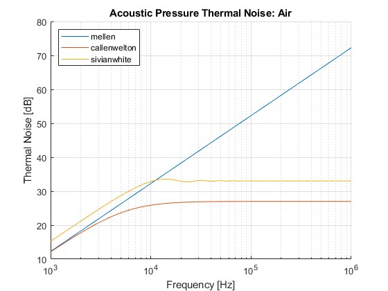
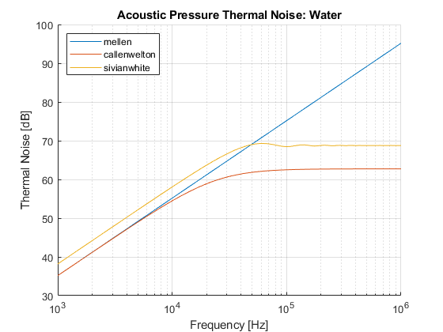

thermalnoise
Calculates acoustic pressure thermal noise from a library of algorithms.
---
NL = thermalnoise(method, T, rho, c, f, df, {a});Calculates thermal noise level using algorithm name METHOD with
NL float Noise Level [dB] T float Medium Temperature [K] rho float Medium Density [kg/m^3] c float Medium Compressional Sound Speed [m/s] f float Frequency [Hz] df float Frequency Interval [Hz] a float Radius (Piston/Sphere) [m] method char Algorithm Name (case & special character non-sensitive)
where method is any of:
* 'Mellen' for thermal noise at a point * 'Callen-Welton' for thermal noise on the surface of a sphere * 'Sivian-White' for thermal noise on the surface of a piston
All equation implementations have been vectorized.
---
tn = thermalnoise(methods, t, rho, c, f, df, {a});Calculates thermal noise level using the algorithms listed in METHODS where
tn struct Structure with fields of method names containing the thermal noise level methods cell of chars Cell with chars of algorithm names
---
tn = thermalnoise(T, rho, c, f, df, {a});Calculates thermal noise level using all valid algorithms for the combination of input parameters given.
---
thermalnoise
Call with no arguments to run the examples.
---
Contents
Configuration
Author: Aaron Kaw Date: 1/4/2021
MATLAB Version: 9.8.0.1396136 (R2020a) Update 3 Operating System: Microsoft Windows 10 Enterprise Version 10.0 (Build 19042) Java Version: Java 1.8.0_202-b08 with Oracle Corporation Java HotSpot(TM) 64-Bit Server VM mixed mode
References
[1] Readhead, M. L. (2014, October). Is underwater thermal noise useful?. In Inter-Noise and Noise-Con Congress and Conference Proceedings (Vol. 249, No. 2, pp. 4978-4983). Institute of Noise Control Engineering.
Implementation (Source Code)
function tn = thermalnoise(varargin) algs = struct( ... 'mellen', @(p) Mellen(p.T, p.rho, p.c, p.f, p.df), ... 'callenwelton', @(p) CallenWelton(p.T, p.rho, p.c, p.f, p.df, p.a), ... 'sivianwhite', @(p) SivianWhite(p.T, p.rho, p.c, p.f, p.df, p.a) ... ); pars = {'T', 'rho', 'c', 'f', 'df', 'a'}; if nargin == 0 example('Air') example('Water') return end switch class(varargin{1}) case 'char' m = lower(varargin{1}(isletter(varargin{1}))); p = struct(); for n = 1:length(varargin)-1 p.(pars{n}) = varargin{n + 1}; end tn = 20*log10(sqrt(algs.(m)(p))/1e-6); case 'cell' methods = varargin{1}; for n = 1:length(methods) m = lower(methods{n}(isletter(methods{n}))); try tn.(m) = thermalnoise(m, varargin{2:end}); catch E if ~strcmp(E.message, 'Reference to non-existent field ''a''.') error(E.message) end end end case 'double' tn = struct(); tn = thermalnoise(fields(algs), varargin{:}); otherwise error('Unrecognized class of first input argument.') end end % Algorithms function p_ms = Mellen(T, rho, c, f, df) % Mean-square noise pressure in water at a point [1]. Also derived by Callen & Welton as vanishing % sphere [1]. p_ms = 4*pi*k_B*T.*rho.*f.^2.*df./c; end function p_ms = CallenWelton(T, rho, c, f, df, a) % Mean-square fluctuating pressure averaged over spherical surface [1]. k = 2*pi*f./c; p_ms = 4.*pi.*k_B.*T.*rho.*f.^2./c./(1 + (k.*a).^2).*df; end function p_ms = SivianWhite(T, rho, c, f, df, a) % mean-square thermal acoustic pressure in air averaged over piston in infinite wall [1]. k = 2*pi*f./c; p_ms = 4*k_B*T.*rho.*c/pi./a.^2*(1 - besselj(1, 2*k.*a)./k./a).*df; end % Auxiliary Functions function val = k_B % Boltzmann's constant in J/K. val = 1.380649e-23; end % Examples function example(medium) switch medium case 'Air' rho = 1.2041; % kg/m^3 c = 343; % m/s case 'Water' rho = 1027.3; c = 1500; end f = 10.^(linspace(log10(1e3), log10(1000e3))); % Hz T = 4 + 273.15; % K df = 1e5; % Hz a = 1e-2; % m tn = thermalnoise(T, rho, c, f, df, a); figure hold on for method = fields(tn)' m = method{:}; plot( ... f, tn.(m), ... 'DisplayName', m ... ) end legend('Location', 'NorthWest') title(['Acoustic Pressure Thermal Noise: ' medium]) xlabel('Frequency [Hz]') ylabel('Thermal Noise [dB]') set(gca, 'xscale', 'log') grid on end 